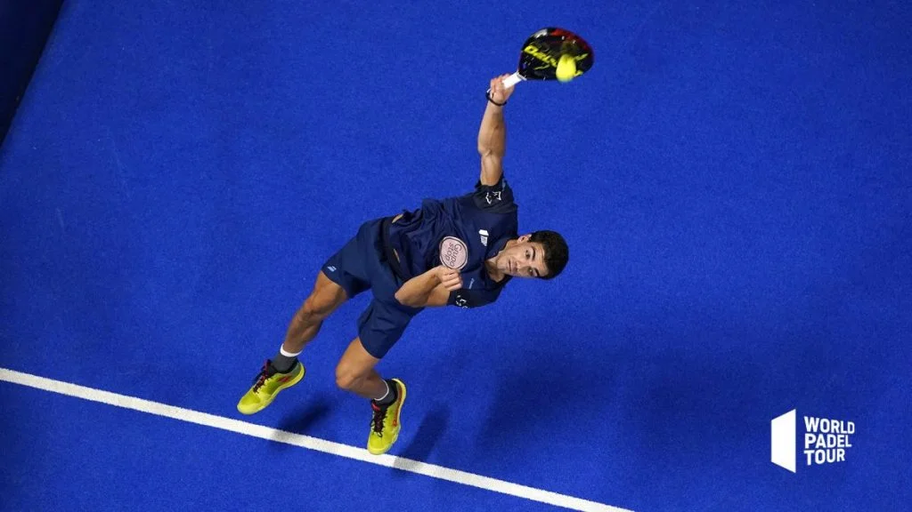

Mi perfil

Nacido en el Puero de Santa Maria, Cadiz, el 30 de Enero de 1995 y siempre son el sueño presente de llegar a ser el mejor.
Jugador de padel profesional desde 2013, siendo en 2019 el primer jugador español en ser número 1 del mundo junto a Paquito Navarro, su pareja, al año siguiente decidio cambiar de paerja y juntarse con Alejandro Galán, con el cual ha llegado a ser número 1 hasta 4 años seguidos, consolidandose como dos de los mejores jugadores de la historia
Desarrollo en la pista
-
Volea
80%
-
Defensa
90%
-
Remate
100%
Pagina personal
- Correo:
- juanitoellobo@soyelmejor.es
- Direccion:
- Av. De vuelta, 72, Chiclana, 11130 Cadiz
- Telefono:
- 621213340
Juan Lebron
Formación
- 1994: Curso de cocina en Suiza
- 1987-1989: Escuela Superior de Hosteleria y Turismo de Madrid
Mis parejas durante estos años
- 2013, comienzo con Martín Sánchez Piñeiro
- 2016, continuo con Gabi Reca
- 2017, empezó la temporada con Marcello Jardim y la terminó con Adrián Allemandi.
- 2018, inicio de temporada con Juan Cruz Belluati, y fin de ella con Juan Marín Díaz, considerado por muchos el mejor de la historia
- 2019, Paquito Navarro, primera vez numero 1 del mundo
- 2020-2024, Alejandro Galán, 4 años seguidos numeros uno del mundo